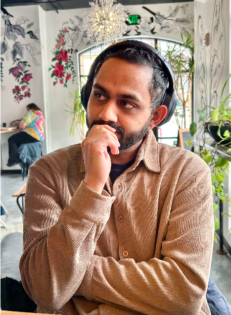

pavse@wisc.edu Department of Computer Sciences, University of Wisconsin–Madison
I am a fifth-year Computer Science Ph.D. candidate at the University of Wisconsin–Madison, where I am advised by Josiah Hanna. Previously, my research was supported by the Cisco Systems Distinguished Graduate Fellowship, and I was a research intern at Netflix Research and Sony AI.
I am broadly interested in building artificial intelligence agents that make decisions and learn from experience, i.e., reinforcement learning. My PhD work has focussed on the critical question of how agents should learn representations of their world to make reliable long-term predictions for optimal decision-making. Most recently, I have been interested in these questions at the intersection of hierarhical RL, planning, and computation.
Previously, I completed my BS and MS in Computer Science from the University of Texas at Austin, where I was fortunate to be advised by Peter Stone. I also worked as a software engineer at Salesforce and SAS Institute.
Feel free to shoot me an email if you want to chat!
@inproceedings{pavse2025stable,
archiveprefix = {arXiv},
author = {Brahma S. Pavse and Yudong Chen and Qiaomin Xie and Josiah P. Hanna},
booktitle = {Proceedings of the 42nd International Conference on Machine Learning (ICML)},
eprint = {2410.01643},
month = {July},
primaryclass = {cs.LG},
title = {Stable Offline Value Function Learning with Bisimulation-based Representations},
url = {https://arxiv.org/abs/2410.01643},
year = {2025}
}
@inproceedings{pavse2024stabilize,
archiveprefix = {arXiv},
author = {Brahma S. Pavse and Matthew Zurek and Yudong Chen and Qiaomin Xie and Josiah P. Hanna},
booktitle = {Proceedings of the 41st International Conference on Machine Learning (ICML)},
eprint = {2306.01896},
month = {July},
primaryclass = {cs.LG},
title = {Learning to Stabilize Online Reinforcement Learning in Unbounded State Spaces},
url = {https://arxiv.org/abs/2306.01896},
year = {2024}
}
@inproceedings{pavse2023rope,
archiveprefix = {arXiv},
author = {Brahma S. Pavse and Josiah P. Hanna},
booktitle = {Advances in Neural Information Processing Systems (NeurIPS)},
eprint = {2310.18409},
month = {December},
primaryclass = {cs.LG},
title = {State-Action Similarity-Based Representations for Off-Policy Evaluation},
url = {https://arxiv.org/abs/2310.18409},
year = {2023}
}
@inproceedings{pavse2023absmis,
address = {Washington, DC, USA},
author = {Brahma S. Pavse and Josiah P. Hanna},
booktitle = {Proceedings of the 37th AAAI Conference on Artificial Intelligence (AAAI)},
month = {February},
title = {Scaling Marginalized Importance Sampling to High-Dimensional State-Spaces via State Abstraction},
url = {documents/papers/2023/pavse_2023_absmis.pdf},
year = {2023}
}